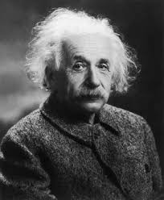

Albert Einstein
(E=mc2)

Physicist, Scientist (1879-1955)
10 Things You Didn't Know About Albert Einstein:
- He renounced his German citizenship when he was 16. From an early age, Albert Einstein loathed nationalism of any kind and considered it preferable to be a “citizen of the world.” When he was 16, he renounced his German citizenship and was
officially state-less until he became a Swiss citizen in 1901.
- He married the only female student in his physics class. Mileva Marić was the only female student in Einstein’s section at Zürich Polytechnic. She was passionate about math and science, and was an aspiring physicist in her own right, but she
gave up those ambitions when she married Einstein and became the mother of his children. (Watch: “When Albert Met Mileva”)
- He had a 1,427-page FBI file. In 1933, the FBI began keeping a dossier on Albert Einstein, shortly before his third trip to the U.S. This file would grow into 1,427 pages of documents focused on Einstein’s lifelong association with pacifist
and socialist organizations. J. Edgar Hoover even recommended that Einstein be kept out of America by the Alien Exclusion Act, but he was overruled by the U.S. State Department.
- He had an illegitimate baby. Einstein’s future wife Mileva gave birth out of wedlock to a baby girl in 1902 while staying with her family in Serbia. The baby was named Lieserl, and it’s believed by historians that she either died in infancy,
probably of scarlet fever, or was given up for adoption. In all likelihood, Einstein never saw his daughter in person. Lieserl’s existence wasn’t widely known until 1987, when a collection of Einstein’s letters was made public.
- He paid his first wife his Nobel Prize money for a divorce. Anticipating winning a Nobel Prize, Einstein offered all his expected prize money to his first wife, Mileva Marić, so she would agree to grant him a divorce. The award added up to
$32,250, which was more than ten times the annual salary of the average professor at the time.
- He married his first cousin. Elsa, the second Mrs. Einstein, was the daughter of Albert’s mother’s sister, making them first cousins. They were also second cousins, as Elsa’s father and Albert’s father were cousins. Her maiden name was Einstein.
- He was a civil rights activist before the civil rights movement. Einstein was a strong supporter of civil rights and free speech. When W.E.B. Du Bois was indicted in 1951 as an unregistered agent for a foreign power, Einstein volunteered to
testify as a character witness on his behalf. After Du Bois’s lawyer informed the court that Einstein would appear, the judge decided to dismiss the case.
- His son was institutionalized for most of his adult life. Albert’s second son, Eduard, whom they affectionately called “Tete,” was diagnosed with schizophrenia and institutionalized for most of his adult life. Eduard was fascinated with psychoanalysis
and was a big fan of Freud. Although they corresponded in letters, Albert never saw his son again after he immigrated to the U.S. in 1933. Eduard died at the age of 55 in a psychiatric clinic.
- He had a rocky friendship with “the father of chemical warfare.” Fritz Haber was a German chemist who helped recruit Einstein to Berlin and would become one of Einstein’s close friends. Haber was Jewish but converted to Christianity, and preached
the virtues of assimilation to Einstein before the Nazis came to power. In WWI, he developed a deadly chlorine gas, which was heavier than air and could flow down into the trenches to painfully asphyxiate soldiers by burning through their
throats and lungs. Haber is sometimes referred to as the “father of chemical warfare.”
- He had an affair with an alleged Russian spy. In 1935, Einstein’s stepdaughter Margot introduced him to Margarita Konenkova, and they became lovers. In 1998, Sotheby’s auctioned nine love letters written between 1945 and 1946 from Einstein
to Konenkova. According to a book written by a Russian spy master, Konenkova was a Russian agent, though historians have not confirmed this claim.
- "The important thing is not to stop questioning. Curiosity has its own reason for existing."
- --Albert Einstein
If you have time, you should read more about this incredible human beeing on his Wikipedia entry